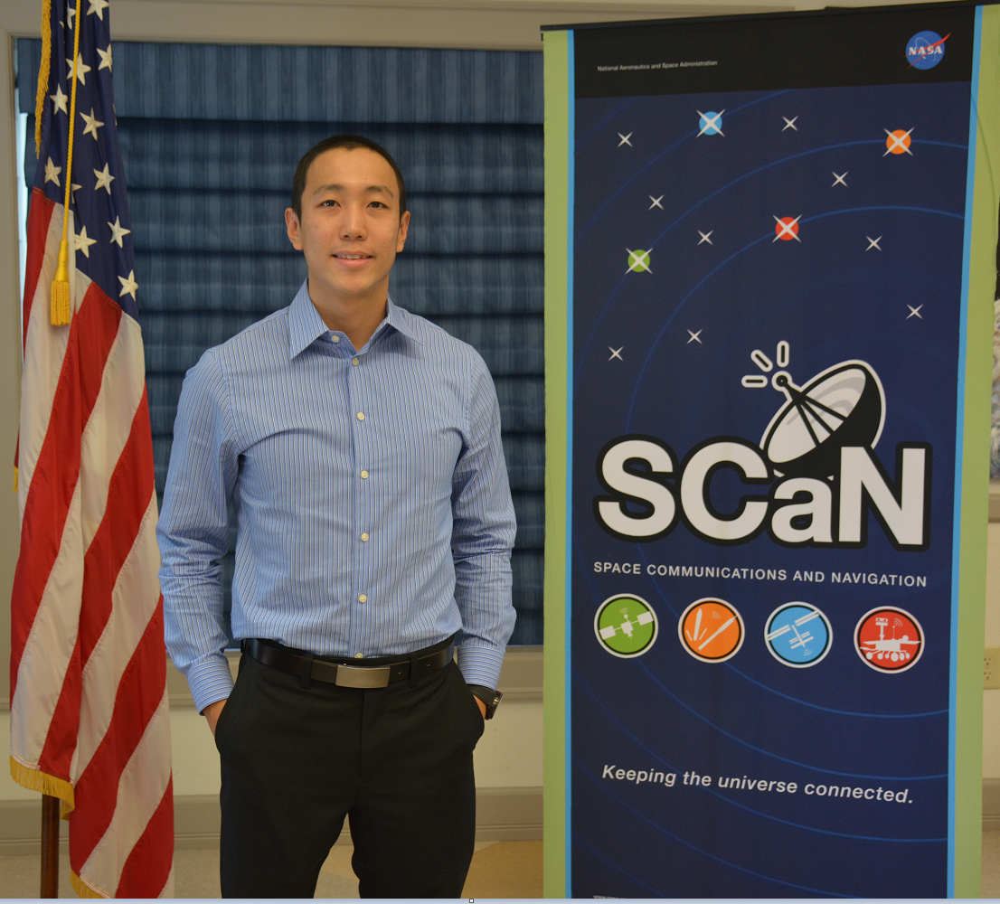

<div id="aboutPage">
  
  <article>
    <p>
      I'm a junior studying computer science at University of California. Aside from school I focus on applying my skills
      working in internships at places like NASA Jet Propulsion Laboratory, NASA Glenn Research Center, and ViaSat.
      I plan on graduating in summer 2018 and currently looking for a summer 2017 software engineering internship.
    </p>
    <p>
      I am proficient with C#, Java, Python, Javascript, and C++ (in the order of most to less experience).
      I've used these languages to write OOP code and worked on a few large n-tier architecture applications in my past internships.
      I've worked with production Microsoft SQL servers and written optimized queries, stored procedures, and created new table schemas.
      I've also had backend web development experience using the .NET framework.
      Productivity wise I worked on teams that followed Scrum and Git for version control.
    </p>
    <p>My current interest is data engineering and backend data services. I am also interested in data analytics using
      machine learning or data mining, so that is extra motivation to learn how to engineer data pipelines that can do the data gathering.
      I am currently learning about building scalable databases, big data platforms (Hadoop MongoDB),
      cloud infrastructure and orchestration, and building RESTful API's.
    </p>
  </article>
</div>